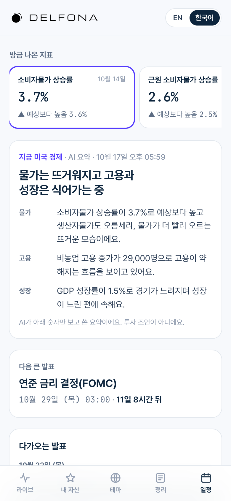
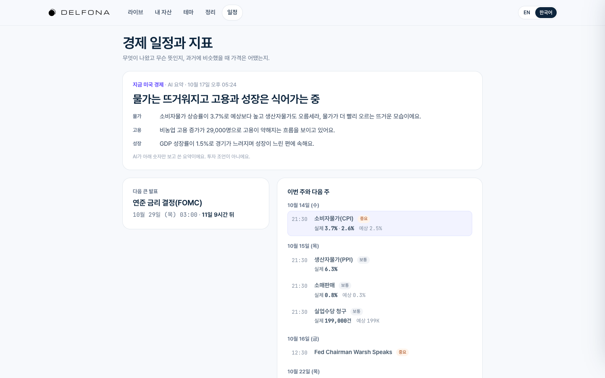
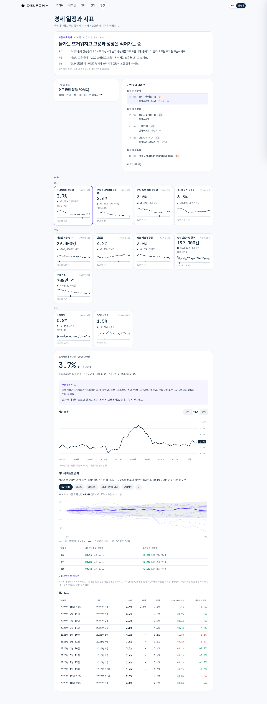
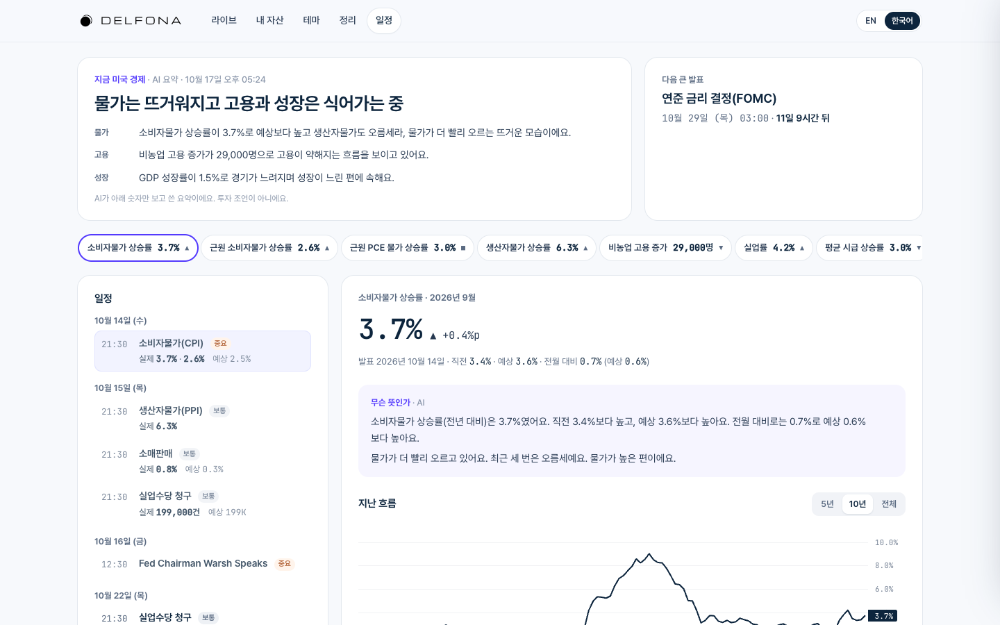
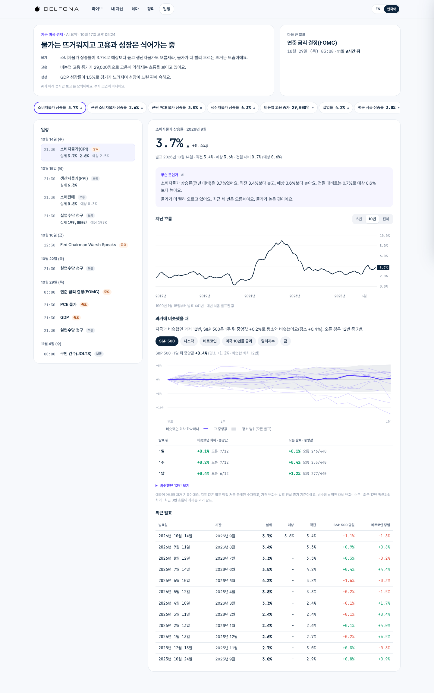

C3 · 대시보드 (수정본)
맨 위 '방금 나온 지표', 상세 왼쪽 = 지난 흐름 + 최근 발표 표, 오른쪽 = 과거에 비슷했을 때. 휴대폰은 카드 2열. 직접 열기


휴대폰 첫 화면

위에서 아래로 읽는 구성. 첫 화면 → 전체. 직접 열기


왼쪽 일정, 오른쪽 상세. 직접 열기


맨 위 '방금 나온 지표', 상세 왼쪽 = 지난 흐름 + 최근 발표 표, 오른쪽 = 과거에 비슷했을 때. 휴대폰은 카드 2열. 직접 열기
휴대폰 첫 화면
